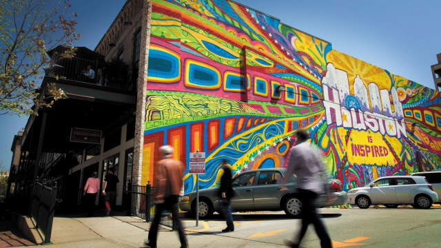
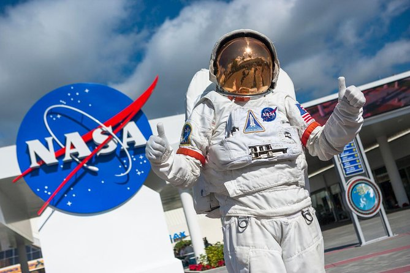
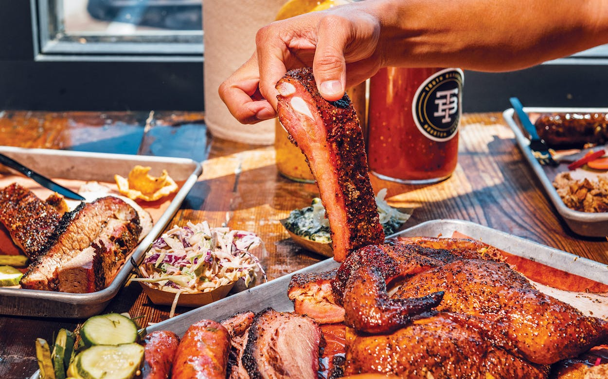
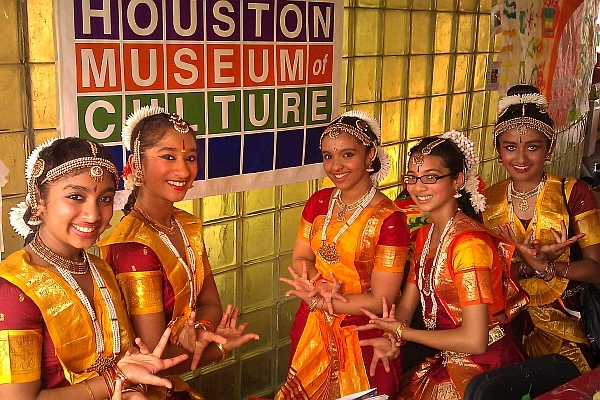

Discover Houston
Attractions, Food, and Southern Hospitality
Welcome to Houston, a vibrant city filled with exciting attractions, unforgettable flavors, and warm southern hospitality. Whether you are planning a vacation, a weekend getaway, or simply looking for a new place to explore, Houston offers something for every visitor. From its beautiful skyline and lively neighborhoods to its famous restaurants and family-friendly destinations, the city creates an experience that is both fun and welcoming. Houston is a place where adventure, culture, and great food come together, making it one of the best destinations in Texas.

Photo Source: Visit Houston Texas
Visitors to Houston can enjoy a wide variety of attractions that make every trip memorable. Explore the wonders of space at Space Center Houston, where guests can learn about NASA missions and space travel. Spend a day with family at Houston Zoo , home to animals from around the world, or visit the famous Museum District for art, science, and history. Nature lovers can relax at Buffalo Bayou Park, while shoppers can enjoy luxury stores and dining at The Galleria. No matter your interests, Houston offers endless places to discover.

Photo Source: Trip Advisor
Houston is also known as one of the best food cities in America, making it a dream destination for food lovers. Visitors can enjoy authentic Tex-Mex, slow-smoked Texas barbecue, fresh seafood, and international dishes from cultures around the world. Because Houston is one of the most diverse cities in the nation, its food scene is rich with variety and flavor. From casual food trucks to elegant restaurants, every meal can become a highlight of your trip. If you are searching for a city that combines amazing attractions with incredible food, Houston is ready to welcome you.

Photo Source: Texas Monthly
Houston is widely recognized as one of the most diverse cities in the United States, making it a vibrant place where many cultures, traditions, and communities live side by side. People from all over the world have made Houston their home, creating a city rich in languages, foods, celebrations, and customs. Large Hispanic and Latino communities, including Mexican, Salvadoran, Colombian, and other Latin American backgrounds, have greatly influenced Houston’s identity through family traditions, music, and cuisine. Houston is also home to a strong African American community whose history, leadership, arts, business achievements, and cultural contributions have helped shape the city for generations. Asian communities are also a major part of Houston’s diversity, including Vietnamese, Chinese, Indian, Filipino, Pakistani, Korean, and many others who have established thriving neighborhoods, businesses, temples, markets, and restaurants throughout the city.

Photo Source: Houston Culture
Quick Houston History
- Houston was founded in 1836 and named after Sam Houston.
- Houston served as the capital of the Republic of Texas in 1837.
- Houston became known as Space City after NASA opened the Johnson Space Center in 1961.
Top 3 Houston Guides for Tourists
- Visit Houston – The official destination marketing organization for Houston tourism, attractions, hotels, and events.
- Texas Tourism – Provides official statewide travel information including Houston destinations.
- Houston First Corporation – Oversees convention, tourism, and major visitor venues in Houston.